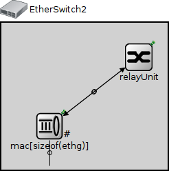
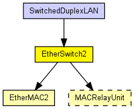
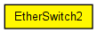

Model of an Ethernet switch built with EtherMAC2, which means that all ports are operating in strictly full-duplex mode. Use EtherSwitch if you need half-duplex operation on some ports.
This model does not contain the spanning tree algorithm.
The following diagram shows usage relationships between types. Unresolved types are missing from the diagram. Click here to see the full picture.
The following diagram shows inheritance relationships for this type. Unresolved types are missing from the diagram. Click here to see the full picture.
| SwitchedDuplexLAN (network) | (no description) |
| Name | Type | Default value | Description |
|---|---|---|---|
| relayUnitType | string | "MACRelayUnitNP" |
type of the MACRelayUnit; currently possible values are MACRelayUnitNP and MACRelayUnitPP |
| Name | Value | Description |
|---|---|---|
| node | ||
| labels | node | |
| display | i=device/switch |
| Name | Direction | Size | Description |
|---|---|---|---|
| ethg [ ] | inout |
| Name | Type | Default value | Description |
|---|---|---|---|
| relayUnit.addressTableFile | string |
set to empty string if not used |
|
| relayUnit.addressTableSize | int |
max size of address table |
|
| relayUnit.agingTime | double |
max idle time for address table entries (when it expires, entry is removed from the table) |
|
| mac.address | string | "auto" |
MAC address as hex string (12 hex digits), or "auto". "auto" values will be replaced by a generated MAC address in init stage 0. |
| mac.txQueueLimit | int | 1000 |
maximum number of frames queued up for transmission; additional frames are dropped. Only used if queueModule=="" |
| mac.mtu | int | 1500 |
// // Model of an Ethernet switch built with EtherMAC2, which means // that all ports are operating in strictly full-duplex mode. // Use EtherSwitch if you need half-duplex operation on some ports. // // This model does not contain the spanning tree algorithm. // module EtherSwitch2 { parameters: @node(); @labels(node,ethernet-node); @display("i=device/switch"); string relayUnitType = default("MACRelayUnitNP"); // type of the MACRelayUnit; currently possible // values are MACRelayUnitNP and MACRelayUnitPP gates: inout ethg[] @labels(EtherFrame-conn); submodules: relayUnit: <relayUnitType> like MACRelayUnit { parameters: @display("p=200,50"); gates: lowerLayerIn[sizeof(ethg)]; lowerLayerOut[sizeof(ethg)]; } mac[sizeof(ethg)]: EtherMAC2 { parameters: promiscuous = true; queueModule = ""; @display("p=70,150,row;q=queue"); } connections: for i=0..sizeof(ethg)-1 { mac[i].upperLayerIn <-- relayUnit.lowerLayerOut[i]; mac[i].upperLayerOut --> relayUnit.lowerLayerIn[i]; mac[i].phys <--> ethg[i]; } }